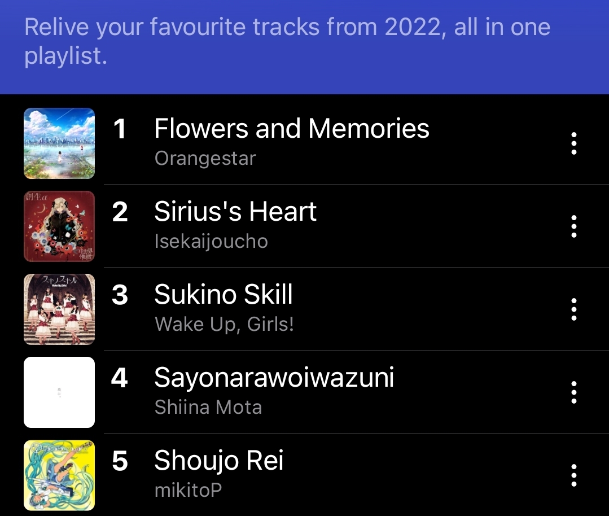

BGM：椎名もた/初音ミク - Sayonarawoiwazuni
B站没有原版，可以自己开个播放器听。讲点有的没的创作故事。只讲我参与了的部分。
-
Sayonarawoiwazuni是华牧狸在最开始的时候给我的demo曲之一。华牧狸在八月的尾声邀请我加入了鸽游愚人节企划。他给我发消息的时候我正坐在从纽卡到伦敦的LNER上，在两天后告别英国，结束一年的留学之旅。大概因为戳中了什么，我在之后很长一段时间内都在loop这首歌。22年快结束的时候回头一看，这歌给我听成了Apple Music年度第四。
 -
加群的时候华牧狸和AiSS已经定下来曲子是雪降了。大概是在八月头定下来的。所以说哪里有什么“愚人节选曲规律”，都是曲师觉得哪首好听就去找原曲师要个授权然后就开始remix了（
-
另一首Demo曲是《そらのサカナ》。
-
那天我们聊了一下午的ボカコレ2022秋，往届优胜啊stem配布啊椎名もた啊keeno啊这类的。
-
最开始的时候华牧狸和AiSS想让可不来唱。后来聊了会儿。
我：而且选歌手的话也得配合着曲子的感觉和她们的性格来选。AI歌手各个都有她们的想法，所以选歌很重要，选到不适合的就是霸王硬上弓。
华牧狸（听六兆年的stem文件中）：我在听六兆年。太牛了，那个年代，这种质量的曲子。
我：哦对六兆年。cevio的IA就唱不了六兆年了，因为lia唱不了快歌所以cevio的IA也唱不了了。这算是她的性格之一。
我：然后就，歌曲的感觉的话，举个例子，keeno的歌配可不那种甜甜腻腻的声线就会变得很难听（如果你搞cover的话）。
华牧狸：这样子好了 不一定要kafu 听了demo再决定于是选歌手的权利就全权交给我了。
-
华牧狸修改了群名称为“4536五声音阶打铁钢琴”
-
AiSS给前半段定下的感情基调是“很二次元的很催泪的Pop”。做出前半段demo后我让结月缘、IA、琴叶葵和星尘inf都试过。都是能唱出很温柔的声音的歌手，不过感觉钢琴比较亮，再配合曲子氛围，就选了声音比较低沉温柔的缘兔。而且缘兔的声库和exVOICE很多，后续也能做出更多变化。
-
选择的时候考虑了很多因素，比如要上鸽游，前半段的效果……如果这是我自己的曲子的话那我会直接选IA，根本没有其他歌手的事情了，毕竟我是IA推（
-
定好歌手后：
我：反正缘兔也不是没有狂气的曲子，里曲发疯也是可以的，表曲温柔抒情里曲发狂

华牧狸：兔 狂气
AiSS：那还真选对歌手了，这就是我的预想 -
一开始就打算把缘的exVOICE和所有声库都用上。
-
2022年10月份的时候，VOCALOMAKETS和AI社突然搞了个结月缘凪出来。我下了试用版玩了一会儿后马上去DLsite预约了。有了凪之后Talk又多了一层变化，因此更确定要让阿缘来唱了。
-
整个制作过程中我没怎么听过原版的雪降。我是那种听多了之后就会被完全影响的人，为了不被原版带跑，我在灌词时听了几遍后就再也没听过了。
-
2022年12月的时候邦邦发售了夢ノ結唱POPY和ROSE，并出了两个调声教程。1月的时候Reo老师发了个用知声为示例的调声教程。从POPY和ROSE身上以及这三个教程里学到了很多东西，比如说缘在一些句尾的语尾息就是听过POPY唱歌后再做的微调。缘在这首歌里的唱法也大概是那个时候渐渐定下来的。
-
《雪降り ~雪が降っている~》的收尾方式跟full ver.是不一样的。这版维持着整首的情感以一点淡淡的悲伤收尾，而full ver.是突然用力以接上后面的段落。从感情来说这两首不是同一首歌所以做了分开处理。缘在3月以前一直用的是《雪降り ~雪が降っている~》的唱法，full ver.的唱法是临交正式稿前才录的。
-
我前半段最满意的调声是“僕を忘れた人に 人々に聞かせ”这句。
-
这句稍微修改了原词以配合后面的画风突变。
-
有段时间我每天早上起来都会把前一晚调好的版本放上好几遍，听哪里不对劲，然后爬起来开CeVIO改。差不多持续了一个月。每天起床都有新自闭（
-
《雪降り ~雪が降っている~》搞得差不多后大家一起摸了三个月。
-
《メリクリ ~Lost in the Snowstorm~》其实还算录得轻松，很快就录完了。反而是《雪降り ~雪が降っている~》我用了特别高的要求来对自己和阿缘，来来回回折腾了三个月。结果收到了远超预期的效果，在各个社交媒体上也收到了很多“温馨”“感动人心”“一开始以为鸽游真的只是要搞情怀”的评论。
-
华牧狸对念白段的要求是“意识流念白”“语调很平缓的棒读”“蒙太奇”“赛博朋克”，而结月缘雫的声线非常适合“语调很平缓的棒读”，所以直接让缘用雫的声线来读了。而且这段近乎没做多少调声，只微修了一点缘念词念破音的地方。
-
《メリクリ ~Lost in the Snowstorm~》的歌词立意是“遗忘之人竭力想要抓住一丝自己存在过的痕迹”和“雪正在掩盖自己存在过的痕迹”。虽然感觉最后有点跑歪了。
-
整段歌词是在读完《墙上的斑点》后写的。意识流作品的代表作了。
-
“街の空は番組がないときのテレビ画面のようだ（城市上空的天色如同没有节目时的电视屏幕一般）”来自《神经漫游者》的第一句“港口上空的天色犹如空白频道上满是雪花点的屏幕”。大概算赛博朋克要素吧。
-
“ホームに足を踏み入れ、ライトを踏んで、「今」の列車を出発します。（雫）「まだですか？」/（凪）「会いたいよ」”是抄《Jingle Bell》的。
今年も「魂を吹き込むP」目指して頑張りま 2023/2/9 21:32:27
我开始抄Jingle Bell的歌词了踏上月台，踏过灯光，驶离“现在”的列车
“还没好吗？/好想见你”漫天飞雪中掩盖而落的声音估计写了还得删，，，
实装后看到谱面里也有致敬《Jingle Bell》的部分的时候我笑出声了。想一起去了。
-
「まだですか？」来源于妙楽的「彼岸列車まだですか？」。是私货（
-
有很多人喜欢那句Merry Christmas。最开始我让A.I.VOICE缘凪来念，在搞了几十条“Merry Christmas”的语音后还是没有一句能让AiSS满意：“语速太慢……拼接的痕迹太重了……”然后我突然想起来缘的exVOICE vol.3里有一句Merry Christmas，找出来给他听后，他：“就用这个了！”
-
但最开始的那几版念得特别色气。大概因为语速是正常语速的关系。
-
改这段花了一下午。这段修改完后两个人一起看了妙楽的《一边被调教一边祝贺了琴叶姐妹生日快乐十次的伊织弓鹤》。
-
华牧狸：加戏：一起唱和声
AiSS：可以考虑
我：我不唱的（最后没搞成。
-
一开始没打算加核嗓。
AiSS：缘兔不能唱核嗓吧
我：还是能的。Cevio能核，把音高线全擦了就行
AiSS：我草，能的话那就整然后拿到了个这样的示例。对着这个示例做完了。
-
AiSS对“メメメメリクリ（圣圣圣圣诞快乐）”这句的评价是“非常有愚人节味。
这里能填成这样也是意外，当时一听这里拉了个卡带一样的音效所以就想试试，结果刚好能填进去。 -
每次填词都是折磨。写中文词不难，翻成日文再填进音符里才是最折磨的。
-
华牧狸修改了群名称为“三月了！三月了！三月了！”
-
然后我烧起来了。
-
趁着烧还没好的时候调完了“響け……メメメメリクリ”那段。
今年も「魂を吹き込むP」目指して頑張りま 2023/3/2 14:47:17
趁病还没完全好先画一下
感觉病好了就画不出来了
生病的时候对世界的感知会有点不一样
感觉还蛮有意思的现在让缘重录这段的话她应该唱不出来这么疯的感觉了。
-
曲绘上的缘的形象来源于文仓十以前的两张画。
ここで第四の刺客、結月ゆかり聖を(嘘)
— 文倉十 (@haino) December 20, 2014
三周年ほんとにおめでとうありがとう(˘ω˘) pic.twitter.com/oDCA91IyFf
不过画师阿白主要参考的是第一张。誕生日絵描けなかったので昔出したゆかり本に描いてた冬ゆかりさんを(季節的に) pic.twitter.com/RHeE1Co04d
— 文倉十 (@haino) December 21, 2020 -
发饰用的是A.I.VOICE的样式。但是文仓十的设定图看不清，所以我发给阿白的参考图是鵠屋≡的『ゆかりさんのお御髪飾り蕎麦猪口』商品图。
かつて「メタルマカロン」という愛称で一世を風靡したゆかりさんの髪飾りは、A.I.VOICE化による衣装変更に伴い、黒いすり鉢型の意匠へと変更されました。本品はそのA.I.VOICE版髪飾りを大胆に再解釈し
— 鵠屋≡ (@kuguiya_llc) August 5, 2022
蕎麦猪口にしました。
型から起こした完全オリジナル形状。肥前有田で焼かれた有田焼の磁器です。 pic.twitter.com/RMW5TjRw9E -
一开始缘围巾上的图案是星星，后面改成了月亮。
我：我现在提意见还来得及吗（
阿白：来得及，后画完还要合并再改的
我：围巾上那个星星改成月亮
阿白：好
AiSS：围巾上那个星星改成月亮，这个有什么寓意吗
我：星星一般是绁星灯。缘她的意象一般要么是月亮要么是兔子
AiSS：那我猜的没错，跟角色有关
我：缘的：VOCALOIDに縁のある人達が音（月）を結ぶ。
我：灯的：縁で結ばれた人達（星）との紲を灯で照らす。 -
曲名的由来是我过完年后发了条推用来激励自己。
今年也会向着“魂を吹き込むP”努力。
— 夜輪 / Nightwheel (@Yorin_NW) January 2, 2023
今年も「魂を吹き込むP」目指して頑張ります。顺便把自己的群名片也改成了“今年も「魂を吹き込むP」目指して頑張りま”。
然后就被华牧狸和AiSS拿去用了。
因为QQ群名片的字数限制，“す”被截断了。而大家都没发现，直到快交最终稿前才被我发现。
差点要被日本人笑死了（ -
两版的名字是在临公开前两天才定下来的。都是在我散步时想出来的。
-
我有每天下午固定在夕阳落山的时候出去散一小时步的习惯。这段时间里会疯狂听各种歌来听歌手的唱法。《雪降り ~雪が降っている~》快收尾时也会把这首和其他调声参考曲混一起听，听有没有违和感。
-
整个制作过程中我听过的所有用来参考调声的曲：
- 整体唱法参考：
- はるなば / 石黒千尋 - 懐中庭園を持つ少女
- はるなば / 石黒千尋 - 束ね糸
- はるなば / 石黒千尋 / 結月ゆかり - ゴーストマスク
- はるなば / 結月ゆかり - カラ鞠の花
- *Luna / 結月ゆかり - 晴々アンサー
- 前半段：
- ねじ式 / 結月ゆかり 麗 - 麗しき月
- ねじ式 / 結月ゆかり / 結月ゆかり 麗 - 残酷と純粋（残酷与纯粹）
- ねじ式 / 結月ゆかり 麗 - さくらの夜（樱花之夜）
- ねじ式 / 結月ゆかり 麗 - without
- 傘村トータ / IA / 結月ゆかり - 今日も空が綺麗だから（今天天空还是如此绮丽）
- 傘村トータ / 結月ゆかり / 初音ミク / Fukase / Ken - 贖罪（赎罪）
- 傘村トータ / 結月ゆかり - ありがとう（谢谢）
- 傘村トータ / 結月ゆかり / 紲星あかり - アルルの花
- 志茉理寿 / 結月ゆかり - 蝶の行く先へ
- ごーぶす / 結月ゆかり - 逃避行
- 36g(風呂埋葬P) / 結月ゆかり / 結月ゆかりΜμ - 星空日和
- 后半段：
- また切ない世界を生きる / 結月ゆかり - NONSTOP MEDLEY！
- くらげP / 結月ゆかり - 啾噜哩啦·啾噜哩啦·哒哒哒！
- 八王子P / 結月ゆかりMμ - バイオレンストリガー（暴力扳机）
- 椎乃味醂 / 可不 / 結月ゆかり - 死んでしまったんだ（终究还是死了）
- #596ab8 / 椎乃味醂 / 結月ゆかり / 星界 - 溶ける魚
- 椎乃味醂 / 結月ゆかり / 星界 - 得知了
- 整体唱法参考：
-
做前半段的时候我们找了一堆早年术力口抒情金曲来听：歌虽无形、夕日坂、letter song、心拍数#822、牵牛花凋谢之时。外带一首猫叉的REcollection。
-
开工的时候我调侃过“看看是我先找到工作还是demo先出来”。结果曲子都已经实装了我还没找到工作。
AiSS：“今年も「找到工作」目指して頑張りま”
-
很喜欢结月缘的声音。平静的人声中蕴含着无尽的悲伤。
-
华牧狸 2023/1/17 18:28:43
要怎么做我还是没思绪 怎么做也超不过之前
AiSS_A君 2023/1/17 18:29:25
别急
今年も「魂を吹き込むP」目指して頑張りま 2023/1/17 18:33:07
咱可以给你来点灵感风暴
华牧狸 2023/1/17 18:33:17
可以吃点咖喱乌冬
今年も「魂を吹き込むP」目指して頑張りま 2023/1/17 18:35:55
我再给你整点俊达
今年も「魂を吹き込むP」目指して頑張りま 2023/1/17 18:36:50
拌点巧克力薄荷冰淇淋上去 -
写词好难。
今年も「魂を吹き込むP」目指して頑張りま 2023/2/9 16:46:06
我写了点对白
然后觉得不够蒙太奇又删了
我觉得我可能要开始看
僵尸文学bot
华牧狸 2023/2/9 16:51:21
圣诞节杀人事件（？ -
今年も「魂を吹き込むP」目指して頑張りま 2023/2/27 21:26:50
草，明明不是第一次听，进234bpm段的时候还是会被吓到
华牧狸 2023/2/27 21:33:08
嘻嘻 -
华牧狸 2023/2/27 22:27:34
所以就是建议做三份，你简单做个结尾，然后我做个开头
到时候你们还可以写个longver
AiSS_A君 2023/2/27 22:34:45
我歇了，我得写个人专
除非完整版呼声很高结果呼声不是一般的高。
-
整个群凑不出来一个玩phigros的。但是四个人有四个打pjsk。
-
谢谢大佬们带我玩啊啊啊啊！